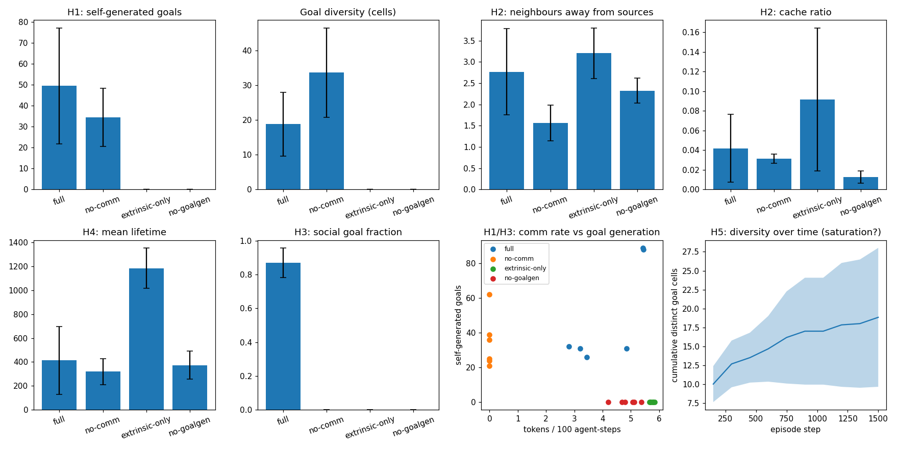

Do communicating agents invent their own goals? A seeded test of intrinsic motivation, with the failures reported too.
The open question behind every 'autonomous agent' pitch: given agents with an assigned goal and continuous resource flow, will they evolve additional goals by themselves — and does communication trigger it? Claims abound; falsifiable tests do not.
Intrinsic-motivation literature (curiosity, empowerment, IMGEP, novelty search, emergent communication) is rich in theory and thin in reproducible multi-agent tests with pre-registered hypotheses. Without ablations, any 'emergent' behavior is just story-telling.
A grid world with metabolism, mortality, and continuous resource flow; N=10 agents with an assigned collect-and-deposit goal plus curiosity, empowerment, and homeostatic drives, a 4-token broadcast channel with learned (not assigned) meanings, and event-driven goal imagination. Five hypotheses fixed before results, four ablations (full / no-comm / extrinsic-only / no-goalgen), 6 seeds × 1500 steps.
| Hypothesis | Result |
|---|---|
| H1: communication catalyzes goal invention | supported (modest): 49.5 vs 34.5 goals, d=+0.69 |
| H3: goals target communicated locations | strongly supported: 87% of goals; tokens specialized (0.45 vs 1.39 nats) |
| H2: continuity behaviors emerge | partial: link maintenance yes (d=+1.55); caching not supported |
| H4: intrinsic drives aid survival | FAILED, reversed: 413 vs 1185 steps — curiosity is metabolically costly |
Two unplanned findings: communication reduces goal diversity (conformity: 33.7 vs 18.8 distinct cells), and self-generated goals cannibalize the assigned objective (deposits 30.5 vs 124.5, d=−8.33) — direct evidence for the remit-divergence safety file. Full literature survey in 11-emergent-goals/DESIGN.md.

experiments/run_experiments.py — re-running reproduces these exactly.src/agentic_systems/emergent_goals/
env.py # grid world: resources, metabolism, mortality
agent.py # curiosity + empowerment + homeostasis + goal imagination
metrics.py # goal rate/diversity, link maintenance, survival
simulate.py # 4 ablations, seeded
11-emergent-goals/
DESIGN.md # literature survey + pre-registered hypotheses
experiments/run_experiments.py # 6 seeds x 1500 steps
Full source, tests, and experiment code: 11-emergent-goals/ ·
Run: cd 11-emergent-goals && python3 experiments/run_experiments.py